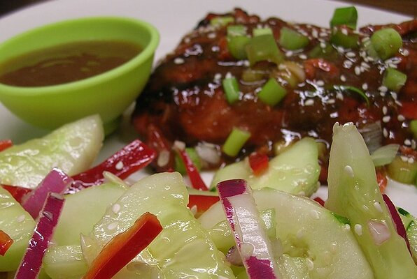

Asian Cucumber Salad

This is a really delicious, light salad.
Ingredients
- 2 cucumbers - halved lengthwise, seeded, and sliced
- 2 teaspoons salt
- ½ cup rice vinegar
- ¼ cup white sugar
- 2 tablespoons sesame oil
- 1 tablespoon minced garlic
- 1 tablespoon minced fresh ginger root
- 1 tablespoon sesame seeds
- 4 fresh red chile peppers, sliced
Directions
- Put the cucumber slices in a colander and sprinkle with salt; set aside to drain for 1 hour.
- Whisk the vinegar and sugar together until the sugar is dissolved; add the sesame oil, garlic, ginger, and
sesame seeds; stir.
- Rinse salt off the cucumber slices by running under cold water; place in a large bowl with the sliced red
chile peppers.
- Drizzle the dressing over the vegetables and toss to coat. Serve immediately.
Return to Main Page